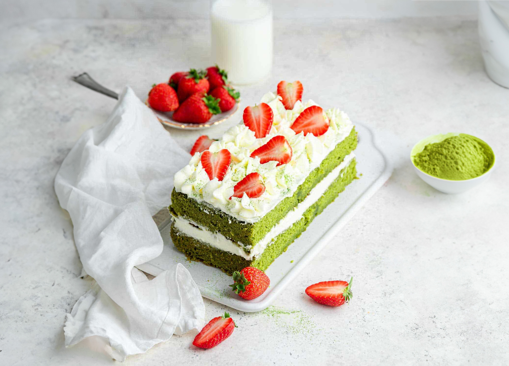

Sweet and Fluffy Layered Matcha Cake!
This sweet green cake, rich with matcha and layered with fluffy buttercream, is topped with fresh strawberries. Easily sliced into a charming two layer load, it’s as delightful as delicious. Perfect for all occasions and all matcha lovers!
Ingredients
- Butter: 7 tablespoons (softened) for the cake and 1 stick buttercream.
- Granulated Sugar: 1 cup
- Eggs: 2
- Vanilla Extract: For flavor.
- Matcha Powder: Use any bright green culinary grade or ceremonial grade.
- Flour: 1 cup
- Baking Powder: To maintain the cake’s color.
- Buttermilk: ⅓ cup or substitute with milk and lemon juice/vinegar.
- Powdered Sugar: For the buttercream.
- Heavy Cream: To make the frosting fluffy.
- Fresh Strawberries: Optional, for decoration.
Steps
- Prep Pan: Preheat oven to 325°F. Line an 8-inch square pan with parchment paper and spray the sides.
- Make Batter: Beat 7 tablespoons softened butter and 1 cup sugar until fluffy. Mix in 2 eggs, 2 tablespoons matcha powder, and 1 teaspoon vanilla. Combine 1 cup flour and 1 teaspoon baking powder, then mix into the batter alternately with ⅓ cup buttermilk.
- Bake: Pour batter into the pan and bake for 30-33 minutes, until a toothpick comes out with moist crumbs. Cool for 1 minute, then transfer to a rack to cool completely.
- Make Frosting: Beat 1 stick softened butter with 2 cups powdered sugar, 1 teaspoon vanilla, and a splash of heavy cream until fluffy.
- Assemble: Slice the cooled cake into two rectangles, stack with buttercream, and frost. Decorate with fresh strawberries!